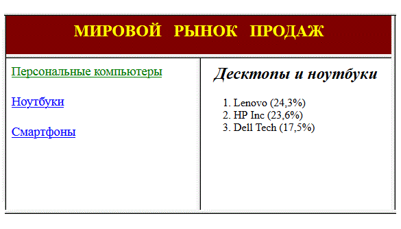

Сибирский государственный университет
телекоммуникаций и информатики
Лабораторные задания по курсу
"Интернет-технологии"
Лабораторная работа N 1.3
Фреймы
Задание
Используя описанные команды создать документ,
в котором в заголовке окна браузера должна быть надпись "Лабораторная 1.3",
а экран разделен на 3 фрейма:
- Вверху фрейм и файл имеют имя head; слева - index; справа - main.
- В файле head.htm содержится заголовок "МИРОВОЙ РЫНОК ПРОДАЖ" - по центру.
- В файле index.htm - сегменты рынка, являющиеся гиперссылками,
при нажатии на которые справа выводится список лидеров продаж за предыдущий отчетный период.
- Файл main.htm содержит только фразу: "Выбирайте сегмент продаж".
- Для отдельных сегментов продаж нужно создать файлы с именами
вида s1.htm ... s3.htm.
Это должно выглядеть так:

Обязательно
Высота фрейма head - 10% от высоты экрана.
Ширина фрейма index - 30% от ширины экрана.
В файлах s1.htm ... s3.htm название сегментов продаж сделать
курсивным заголовком по центру, а фирмы-лидеры перечислить нумерованным списком.
Цвет гиперссылок и фона подобрать самостоятельно.